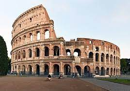
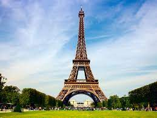
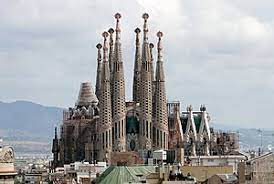
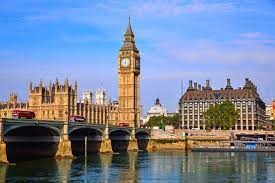
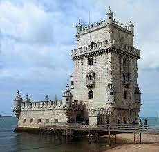

|  | O Coliseu de Roma foi construído no século I (cerca de 70 d.C.). Sua construção teve início no governo do imperador Vespasiano e foi concluído quando Tito, seu filho, estava no poder. No total, foram seis anos para erigir um dos mais emblemáticos símbolos do Império Romano. A intenção principal era o entretenimento do povo. Ou seja, um local para os espetáculos públicos e a luta dos gladiadores romanos. Quando ele foi inaugurado pelo Imperador Tito, foram realizados 100 dias de jogos nas arenas. As atrações incluíam execuções, batalhas navais, combates de gladiadores, lutas e caça de animais, dentre outros. interior do coliseu em roma Interior do Coliseu em Roma Alguns eventos realizados no Coliseu contavam com cenários produzidos e muitos estavam baseados na mitologia romana. O Coliseu de Roma foi utilizado para entretenimento durante 5 séculos. No século V, Roma foi atingida por um terremoto que afetou a estrutura do local. Entretanto, ele foi restaurado posteriormente. Séculos depois, ele foi usado como base militar. Durante a Renascença (a partir do século XV) o local foi diversas vezes saqueado. Sendo assim, perdeu grande parte de seus materiais valiosos. |
A Torre Eiffel se ergueu no céu de Paris no fim do século XIX e festejou seus 120 anos em 2009. Símbolo do país, esta obra, inicialmente, não estava prevista para durar. A data chave associada à história da Torre Eiffel é inegavelmente a Exposição Universal de 1889. Na ocasião do centenário da Revolução Francesa, um grande concurso havia sido organizado, tendo como tema a “possibilidade de erguer sobre o Campo de Marte uma torre de ferro, de base quadrada, com 125 metros de largura e 300 metros de altura”. Dos 107 projetos apresentados, o de Gustave Eiffel foi o escolhido. Ele tinha a seu lado Maurice Koechlin e Emile Nouguier, como engenheiros, e Stephen Sauvestre, como arquiteto. O projeto fez surgir, na época, numerosos destratores que consideraram a Torre como uma ameaça à estética da cidade através da carta de Protesto dos Artistas contra a Torre do Sr. Eiffel. Uma torre de ferro erguida em pleno coração de Paris não convinha, segundo eles, por contrastar demasiadamente com a elegância e a beleza refinada da cidade. Verlaine, por exemplo, apelidou a Torre Eiffel de “esqueleto de Beffroi” para descrever a aparência pouco graciosa do monumento, uma torre gigante que iria “desfigurar” a cidade. |
 |
|  | A Sagrada Família é o monumento mais visitado de Barcelona e considerada a obra mais importante do arquiteto Antonio Gaudí. Quem visita a cidade não pode deixar de jeito nenhum de apreciar essa atração cheia de significados, energia e beleza. A Sagrada Família em Barcelona começou a ser construída em 1882, mas foi em 1883 que o mestre arquiteto Antonio Gaudí assumiu a obra. Gaudí projetou a Sagrada Família baseado na tradição das catedrais góticas e bizantinas. A fachada da igreja, que fica em ruas diferentes, retrata a vida e morte de Jesus Cristo, sendo: o Nascimento (na rua Marina), a Paixão, morte e ressurreição (na rua Sardenya) e a Glória, presente e futuro (na rua Carrer Mallorca). A fachada do Nascimento e a Cripta do Templo Expiatório da Sagrada Família são Patrimônio da Humanidade da UNESCO desde 2005. Das 18 torres que Gaudí projetou para a Sagrada Família, atualmente oito foram construídas: quatro na fachada do Nascimento e quatro na fachada da Paixão. Os visitantes podem adquirir ingressos, além do bilhete de entrada na igreja, para subirem nessas torres e terem uma vista única de Barcelona. |
| "Londres tem como símbolo a torre do Big Ben, no Palácio de Westminster. O Big Ben é, na verdade, o Great Bell, um grande sino localizado no interior da Elizabeth Tower, prédio que abriga as casas do Parlamento da Grã-Bretanha e traz o relógio mais famoso do mundo - o Great Clock. Muitas pessoas acham que o Big Ben é a Torre do Parlamento, o que está errado. O sino Big Ben pesa 13,7 toneladas e mede 2,28 m de altura por 2,75 m de largura. Ele soou pela primeira vez em 11 de julho de 1859. Ele soa a cada hora exata marcada pelo relógio oficial de Londres, badaladas que são transmitidas pela emissora British Broadcasting Corporation (BBC). Além do famoso Big Ben, outros sinos menores tocam a cada 15 minutos na Elizabeth Tower. O relógio do Big Ben é composto por quatro faces gigantes e iluminadas. Construído no reinado da rainha Vitória, o prédio traz a inscrição em latim DOMINE SALVAM FAC REGINAM NOSTRAM VICTORIAM PRIMAM (Senhor, mantenha a salvo nossa Rainha Victoria Primeira)." Veja mais sobre "Big Ben" em: https://brasilescola.uol.com.br/curiosidades/big-ben.htm |
 |
|  | A Torre de Belém é um monumento super tradicional e histórico de Lisboa, assim como o Castelo de São Jorge em Lisboa. Com 30 metros de altura, ela é uma fortificação que se destaca pela sua arquitetura, já que é rodeada por decorações e brasões das armas de Portugal, incluindo inscrições de cruzes da Ordem de Cristo nas janelas. Ela é chamada oficialmente de Torre de São Vicente, e fica afastada do centro turístico de Lisboa, estando localizada na freguesia de Belém. Mais abaixo, nós explicamos como chegar até ela. |